3.1 Leçon
Un système de coordonnées de référence (SCR) est un ensemble d’informations qui accompagne un jeu de données spatiales et qui permet de situer ces données sur la surface de la Terre. Ces informations comprennent le modèle utilisé pour représenter la forme de la Terre, c’est-à-dire sa géodésie, et le système de mesure utilisé pour définir des coordonnées qui est soit géographique (système à trois dimensions où les coordonnées sont mesurées à partir du centre de la Terre) ou planimétrique (système à deux dimensions où les coordonnées terrestres sont projetées sur une carte plane) (Esri 2016).
3.1.1 Les systèmes géodésiques
La géodésie est l’étude de la forme et des dimensions de la Terre. Au cours de l’histoire, les penseurs et les scientifiques ont adopté divers modèles pour représenter la forme de la Terre (Figure 3.1).
Nous référons couramment à la Terre comme un objet rond et nous la représentons comme telle (le globe terrestre!). En vérité, la Terre n’est pas sphérique mais légèrement aplatie aux pôles.
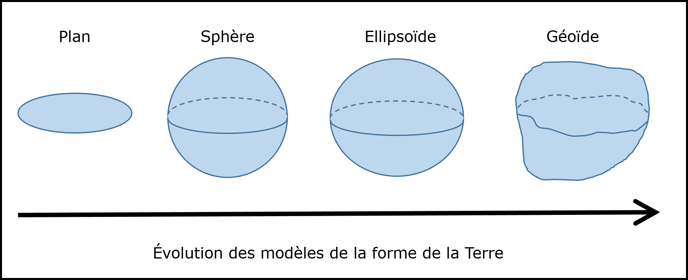
Figure 3.1: Évolution des modèles de la forme de la Terre : un corps plat, une sphère, une ellipsoïde et un géoïde.
La Terre est un corps plastique qui est façonné par un ensemble de forces internes et externes lui donnant une forme irrégulière qui évolue continuellement dans le temps (Figure 3.2). En particulier, le champ gravitationnel agit différemment sur les parties solides, semi-rigides et liquides de la Terre car celles-ci ont des densités différentes2.
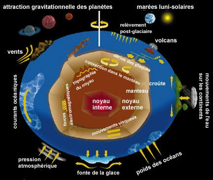
Figure 3.2: Les différentes forces internes et externes agissant continuellement sur la Terre. Source : Ressources naturelles Canada.
Le géoïde est un modèle de la Terre qui tient compte de l’effet du champ gravitationnel. C’est une surface équipotentielle3 du champ de gravité de la Terre qui coïncide avec le niveau moyen des océans (Figure 3.3).
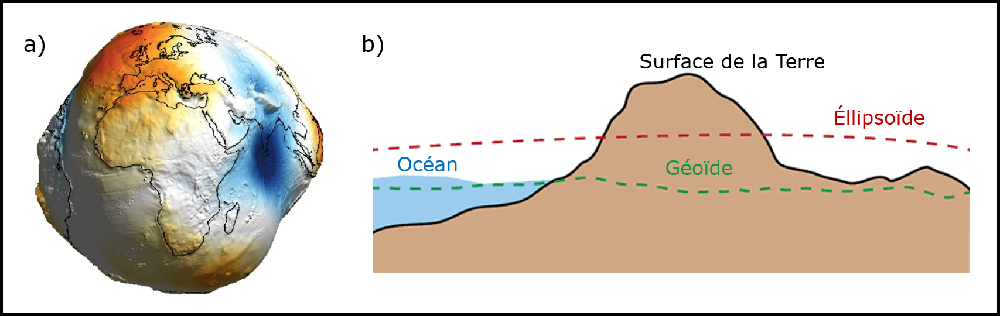
Figure 3.3: Le géoïde. a) La forme irrégulière du géoïde avec des bosses et de creux créer par le champ gravitationnel agissant de façon inégale sur la Terre (source : Bezdek et Sebera 2013). b) Le géoïde coïncide avec le niveau moyen des océans et se distingue de l’ellipsoïde (figure adaptée de USGS).
La précision avec laquelle nous pouvons lier un endroit sur Terre à un ensemble de coordonnées dépend du modèle du globe choisi. Le géoïde procure une plus grande précision que l’ellipsoïde, mais l’ellipsoïde peut être décrit plus facilement par des équations mathématiques.
Nous pouvons distinguer deux types d’ellipsoïdes utilisés en cartographie. Les ellipsoïdes globaux représentent la Terre à l’échelle du globe (Figure 3.4). Les ellipsoïdes locaux représentent une petite région du globe (Figure 3.4). La précision d’un ellipsoïde local est meilleure que celle d’un ellipsoïde global mais uniquement pour des coordonnées situées dans la région qu’il représente.
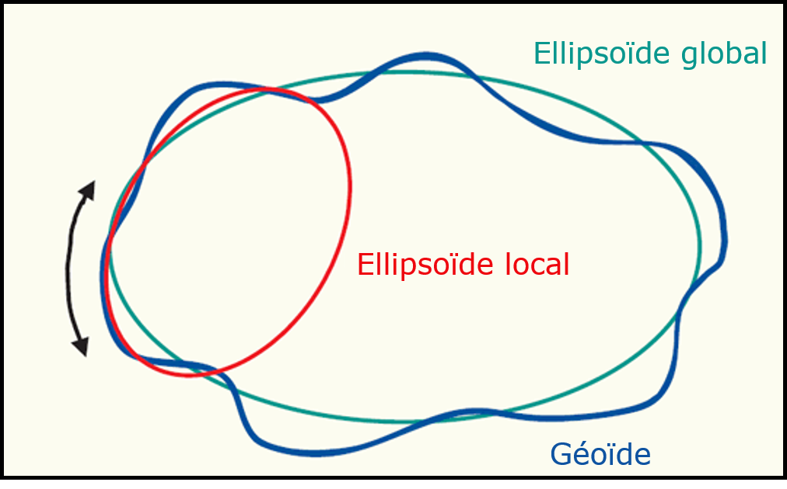
Figure 3.4: Ellipsoïdes global et local. Un ellipsoïde global épouse mieux la forme globale du géoïde, tandis qu’un ellipsoïde local épouse mieux la forme du géoïde localement dans la région indiquée par la flèche noire. Figure adaptée de Knippers (2009).
Un datum est un système de référence qui détermine la position d’un ellipsoïde sur la Terre : c’est-à-dire son origine par rapport au centre du globe, ainsi que son orientation.
Les datums géocentriques sont associés à des ellipsoïdes globaux. Ce sont des systèmes de référence terrestres globaux dont l’origine correspond au centre de masse de la Terre . Puisque aucun ellipsoïde n’épouse parfaitement la surface de la Terre, il y a toujours une certaine marge d’erreur à l’utilisation d’un datum géocentrique (Figure 3.4).
La communauté internationale a adopté différent modèles d’ellipsoïdes globaux au fil du temps avec l’amélioration des techniques spatiales de télémétrie et de positionnement (Thériault 2010). Ces ellipsoïdes diffèrent par les paramètres mathématiques utilisés pour les définir.
Les principaux systèmes de référence globaux utilisés présentement à travers de monde sont le Geodetic Reference System 1980 (GRS80), adopté par l’Union Géodésique et Géophysique Internationale et le World Geodetic System 1984 (WGS84), défini par le National Geospatial-Intelligence Agency des États-Unis (Figure 3.5). Le Global Positioning System (le GPS) utilise le WGS 84.
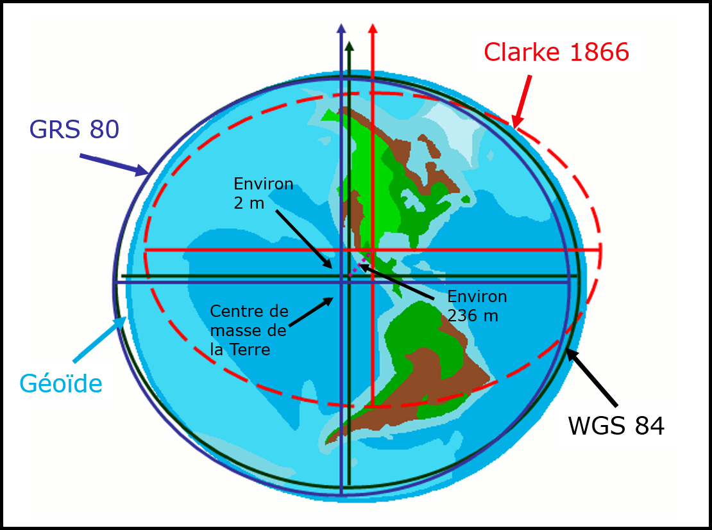
Figure 3.5: Datums globaux. L’origine de l’ellipsoïde WGS84 se trouve au centre de masse de la Terre. L’origine de l’ellipsoïde GRS80 se trouve à environ 2 m de l’origine de l’ellipsoïde WGS84. L’ellipsoïde Clarke 1866 se trouve à environ 236 m de celle du WGS84. Le datum local NAD27 qui a précédé le NAD83 (voir plus bas) était basé sur l’ellipsoïde Clarke 1866. Figure adaptée du National Oceanic and Atmospheric Administration, source : https://vdatum.noaa.gov/docs/datums.html
Le Cadre international de référence terrestre (ITRF) est un système de référence créé et maintenu par le Service international de la rotation de la Terre et des Systèmes de référence (IERS), un organisme international « qui étudie l’orientation de la Terre et établit un système de coordonnées sur la Terre et par rapport à l’espace. »4 L’ITRF n’est pas basé sur un modèle d’ellipsoïde. Il est constitué d’un ensemble de repères terrestres dont les coordonnées \((x,y,z)\) à la surface de la Terre sont établies à partir du centre de la Terre (Figure 3.6). On se sert de ces repères pour déterminer les paramètres des ellipsoïdes globaux et locaux. À cause du mouvement des plaques tectoniques, les coordonnées des repères de l’ITRF doivent être réévaluées périodiquement.
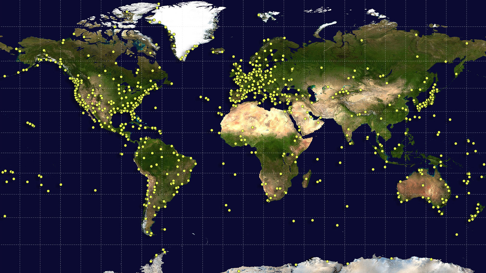
Figure 3.6: Réseau de repères terrestres en vue d’établir le prochain ITRF. Source : NASA Earth Observatory
Les datums locaux sont associés à des ellipsoïdes locaux. Ce sont des systèmes de référence dont l’origine de l’ellipsoïde est décalée par rapport au centre de la Terre.
Un datum local fait correspondre un point de la surface de l’ellipsoïde local à un point de la surface de la Terre. Ce point de référence est fixe et il sert « d’ancrage » au datum. C’est le point d’origine du système de référence local, et il est souvent basé sur une plaque tectonique. Il existe des centaines de datum local servant de système de référence à différentes régions du globe. Il est possible d’utiliser le même ellipsoïde pour définir différents datums.
Le système de référence utilisé en Amérique du Nord est le North American Datum of 1983 (NAD83). Il est basé sur l’ellipsoïde GRS80 et est fixé à la plaque tectonique nord-américaine. Le European Terrestrial Reference System of 1989 (ETRS89) est le système de référence utilisé en Europe. Il est aussi basé sur l’ellipsoïde GRS80 mais est fixé à la plaque tectonique eurasienne. On peut utiliser un datum local seulement pour la région pour laquelle il a été conçu. Ainsi, il serait erroné d’utiliser le ETRS89 pour définir la localisation d’un phénomène spatial au Québec.
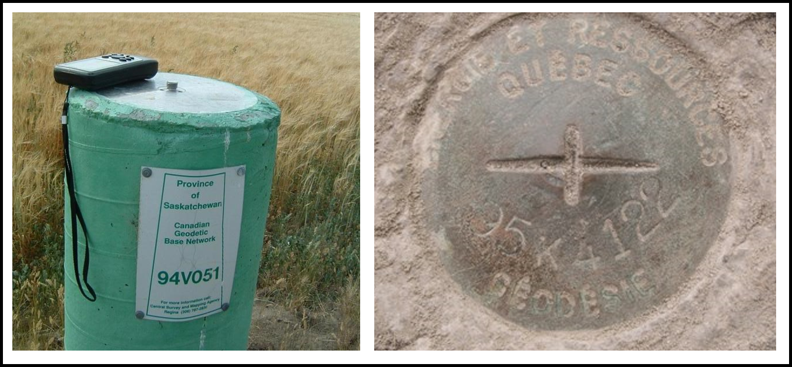
Figure 3.7: Réseau de repères terrestres. Gauche : un repère du Réseau de base canadien (RBC) situé en Saskatchewan. Droite : un repère du Réseau géodésique de grande précision (RGP) au Québec. Certains repères du RGP font partie du RBC. (source : www.waymarking.com)
Le Système canadien de référence spatiale (SCRS) est un datum local créé par le gouvernement canadien spécifiquement pour ces besoins. La majorité des agences fédérales canadiennes qui ont recours à des données spatiales (Ressources naturelles Canada, Pêches et Océan Canada, Agence spatiale canadienne, etc.) utilise ce système de référence.
Le SCRS est un quadrillage tridimensionnel (latitude, longitude et élévation) adapté du système NAD83 – il est d’ailleurs appelé le NAD83 (SCRS). Il a été développé dans les années 1990 pour corriger des distorsions d’environ 2 m observées entre le NAD 83 et un réseau de points de contrôle (le Réseau de base canadien, RBC, Figure 3.7 suivi par un système global de navigation par satellite (GNSS) (pour en savoir plus consulter cette description du SCRS donnée par Ressources naturelles Canada) (Figure 3.8).
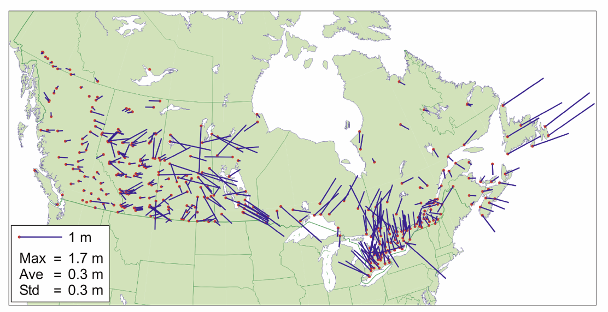
Figure 3.8: Comparaison entre le NAD83 et le SCRS. Les points rouges sont la localisation de repères selon le SCRS et les lignes bleues représentent les erreurs (décalages) produites par le NAD83 sur ces localisations. Figure tirée de Craymer (2006).
3.1.2 Les systèmes de coordonnées
La localisation géographique se fait à partir d’un système de coordonnées. Multiples systèmes de coordonnées peuvent être définis, et les coordonnées d’un endroit sur Terre différeront selon le système utilisé. Il existe deux types de système de coordonnées : le système de coordonnées géographiques et le système de coordonnées projetées.
Le système de coordonnées géographique représente la Terre comme une sphère et donne des coordonnées en trois dimensions pour se situer sur sa surface. Le système géographique est défini par le datum choisi (qui peut être local ou global), une unité angulaire de mesure et un méridien principal (Esri 2016) (Figure 3.9).
![Le système de coordonnées géographique. Les points à la surface de la Terre sont définis par les coordonnées sphériques ($\phi$,$\lambda$) associées à la longitude (ligne mauve) et à la latitude (ligne bleue foncée) respectivement. Le point rouge possède les coordonnées ($\phi$,$\lambda$) = (50$^{\circ}$ E, 40$^{\circ}$ N). La ligne jaune représente le méridien principal. Source : Esri, image récupérée à https://desktop.arcgis.com/fr/arcmap/10.3/guide-books/map-projections/geographic-coordinate-system.htm](Module3/images/3_philambda.png)
Figure 3.9: Le système de coordonnées géographique. Les points à la surface de la Terre sont définis par les coordonnées sphériques (\(\phi\),\(\lambda\)) associées à la longitude (ligne mauve) et à la latitude (ligne bleue foncée) respectivement. Le point rouge possède les coordonnées (\(\phi\),\(\lambda\)) = (50\(^{\circ}\) E, 40\(^{\circ}\) N). La ligne jaune représente le méridien principal. Source : Esri, image récupérée à https://desktop.arcgis.com/fr/arcmap/10.3/guide-books/map-projections/geographic-coordinate-system.htm
Les coordonnées sphériques (\(\phi\), \(\lambda\)) d’un point sur la surface de la Terre correspondent à sa longitude et à sa latitude respectivement (Figure 3.9). On exprime ces coordonnées en degrés (degrés, minutes, secondes (DMS) ou degré décimal (D,D)).
Le système géographique forme ce que l’on appelle un graticule sur la surface de la Terre (Figure 3.10). C’est une grille composée de lignes horizontales, appelées les parallèles, et de lignes verticales, appelées les méridiens. Le parallèle de latitude zéro constitue l’équateur, alors que le méridien de longitude zéro constitue le méridien principal. Dans la plupart des systèmes de coordonnées géographiques, le méridien qui traverse l’Observatoire royal de Greenwich en Angleterre correspond au méridien principal.
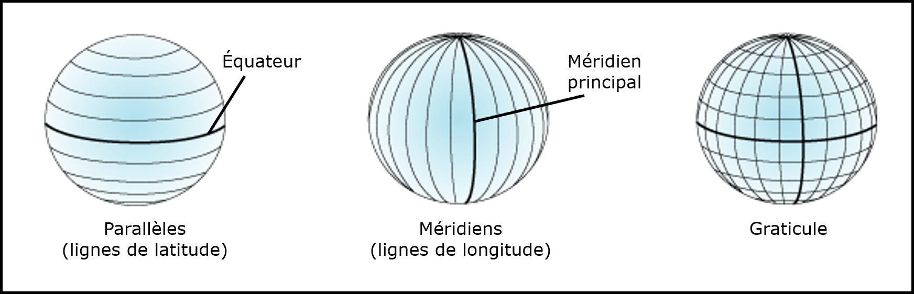
Figure 3.10: Graticule. Les parallèles et les méridiens forment un graticule. Source : Esri, image récupérée à https://desktop.arcgis.com/fr/arcmap/10.3/guide-books/map-projections/about-geographic-coordinate-systems.htm
Le système de coordonnées projeté, quant à lui, réfère à une transformation mathématique permettant de représenter sous forme de carte plane la réalité tridimensionnelle de la Terre (Figure 3.11).
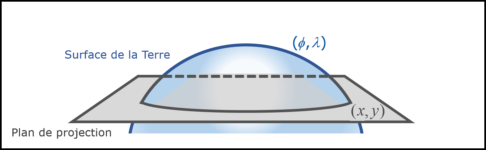
Figure 3.11: Le système de coordonnées projeté. Il permet de représenter sur une surface plane bidimensionnelle la surface tridimensionnelle de la carte à l’aide d’une transformation mathématique \((x,y) = f(\phi, \lambda)\)
Les systèmes de coordonnées projetés sont nécessaires pour la création de cartes géographiques. Cependant, puisqu’il est impossible de représenter parfaitement la surface d’un objet tridimensionnel sur une carte plane, les systèmes projetés génèrent certaines distorsions (ou déformations) : forme, distance, direction, etc. Par ailleurs, toutes les projections conservent un élément important de la cartographie : la précision de la localisation géographique.
3.1.3 Les projections
On peut catégoriser les systèmes de coordonnées projetés selon la classe de transformations mathématiques utilisées, le type d’intersections entre le globe et le plan, l’orientation du plan, et le type de distorsions créé sur le plan.
Classes de transformations
On distingue trois classes principales de transformation pour créer un système de coordonnées projeté (Figure 3.12).
Cylindrique : la surface de la Terre est projetée sur un plan enroulé comme un cylindre. Généralement le cylindre coïncide avec le globe le long d’un parallèle (p.ex. l’équateur).
Conique : la surface de la Terre est projetée sur un cône. Le cône et le globe coïncident le long d’un ou de deux parallèles. Pour aplanir le cône, il est découpé le long d’un méridien, généralement le méridien opposé au méridien principal.
Azimutale (ou plane) : la surface de la Terre est projetée directement sur un plan. Celui-ci touche généralement le globe à un seul point (p.ex. le pôle Nord).
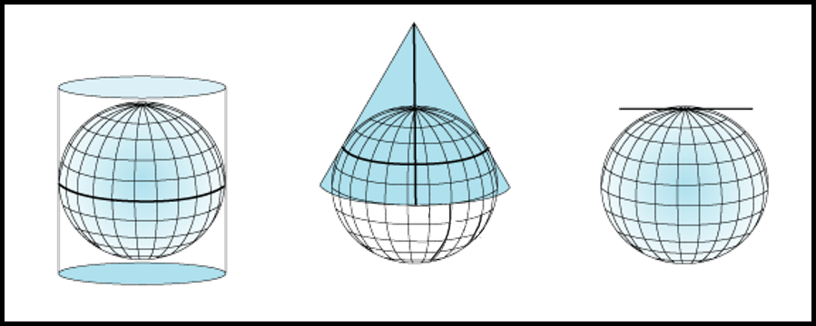
Figure 3.12: Classes de projection: cylindrique (gauche), conique (centre) et azimutale (droite). Toutes les projections illustrées utilisent un plan de projection qui est tangent à la surface de la Terre. Source : Esri. Image adaptée d’illustrations récupérées à https://desktop.arcgis.com/en/arcmap/10.3/guide-books/map-projections/projection-types.htm
Types d’insersection
Il existe deux types d’intersection entre un plan et la surface du globe (Figure 3.13).
Tangente : le plan touche la surface du globe à un seul point (azimutal) ou le long d’une seule ligne (cylindrique et conique). Les transformations illustrées à la Figure classes sont toutes tangentes.
Sécante : le plan traverse la surface du globe le long d’une seule ligne (azimutal) ou le long de deux lignes (cylindrique et conique). Ces lignes sont appelées les parallèles standards. Les transformations illustrées à la Figure intersection sont toutes sécantes.
Notez qu’il n’y a pas de distorsion au point ou à la ligne d’intersection car à cet endroit les systèmes de coordonnées géographiques et projetés coïncident parfaitement.
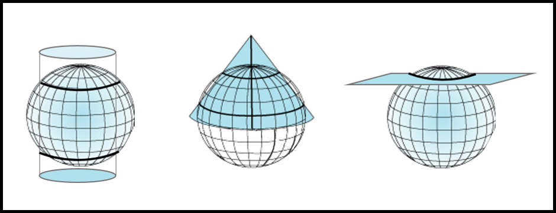
Figure 3.13: Plans de projection sécants avec le globe. Illustrations pour les classes de projection cylindrique (gauche), conique (centre) et azimutale (droit). Source : Esri. Image adaptée d’illustrations récupérées à https://desktop.arcgis.com/en/arcmap/10.3/guide-books/map-projections/projection-types.htm
Orientation
Le plan de projection peut être positionné selon trois différentes orientations par rapport au globe.
Normale : le plan est parallèle par rapport à l’axe Nord-Sud du globe. Les transformations illustrées aux Figure classes et intersection sont toutes normales.
Transverse : le plan est perpendiculaire à l’axe Nord-Sud du globe (Figure 3.14 gauche).
Oblique : le plan est ni parallèle ni perpendiculaire à l’axe Nord-Sud du globe (Figure 3.14 droite).
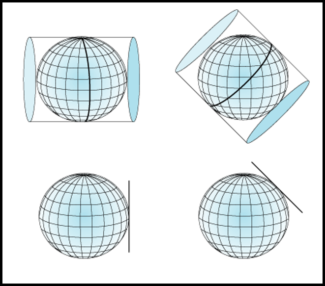
Figure 3.14: Orientations du plan de projection. Orientation transversale (gauche), aussi appelée équatoriale pour la projection azimutale, et orientation oblique (droit). Source : Esri. Image adaptée d’illustrations récupérées à https://desktop.arcgis.com/en/arcmap/10.3/guide-books/map-projections/projection-types.htm
Distorsion
Les projections produisent toutes une certaine forme de distorsion. On caractérise un système de coordonnées projeté selon la propriété qu’il conserve, c-à-d la propriété qu’il ne déforme pas. Il y a trois propriétés importantes qui sont ou non conservées (en tenant compte de l’échelle de la carte): la forme, la superficie et la distance.
Conforme : la projection conserve localement les angles entre les droites. Les cartes de navigation, notamment, sont produites par des projections conformes pour mesurer adéquatement la direction de trajectoires. La conformité implique également la conservation de la forme des régions de petite superficie.
Équivalente : la projection conserve localement l’aire des régions. Les atlas géographiques emplois souvent des cartes produites par des projections équivalentes pour éviter les biais dans la représentation des superficies de différentes régions du monde.
Équidistante : la projection conserve les distances sur certaines lignes du globe, généralement les méridiens.
Aucune projection ne peut être à la fois conforme et équivalente. Plusieurs projections offrent des compromis entre ces deux propriétés.
Il existe plus de deux cent projections distinctes créées au cours de l’Histoire par les scientifiques, notamment des astronomes, des géographes, et des navigateurs. La figure 3.15 illustre un petit sous-ensemble de projections. La projection cylindrique équidistante (coin supérieur gauche de la figure 3.15 a été créée par Marinus de Tyr, un astronome d’origine phénicienne, vers l’an 100. Plusieurs projections sont identifiées par le nom de la personne qui en a fait la découverte. Par exemple, Gérard Mercator est un mathématicien et géographe flamand du 16e siècle, et Jean-Henri Lambert est un mathématicien, cartographe et astronome d’origine alsacienne du 18e siècle.
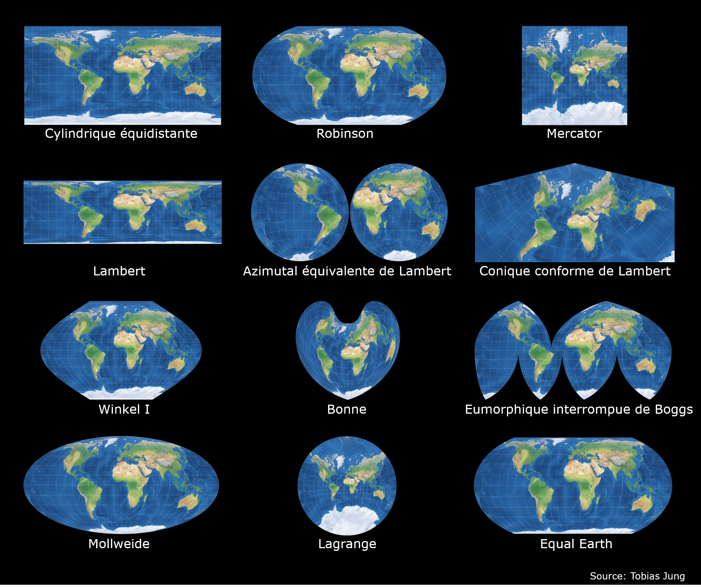
Figure 3.15: Sélection de 12 projections. L’ensemble des cartes est tiré du site : https://map-projections.net/
Je vous invite à consulter le site très intéressant de Tobias Jung où un grand nombre de projections est répertorié. Vous pouvez connaître les propriétés des projections et aussi comparer deux projections entre elles. Jetez-y un coup d’œil!
Sur ce site vous pourrez apprendre, par exemple, que les projections de Mollweide, de Bonne, Equal Earth et eumorphique de Boggs sont équivalentes, alors que les projections de Mercator et de Lagrange sont conformes. Les projections de Mercator et cylindrique équidistante, comme son nom l’indique, sont équidistantes.
L’indicatrice de Tissot permet d’illustrer les déformations produites par une projection (Figure 3.16). Cette indicatrice porte le nom du cartographe français, Nicolas Auguste Tissot, qui l’a créé au 19e siècle. Le niveau de changement de la taille et de la forme des cercles rouges permet de repérer les endroits sur la carte de plus fortes déformations.
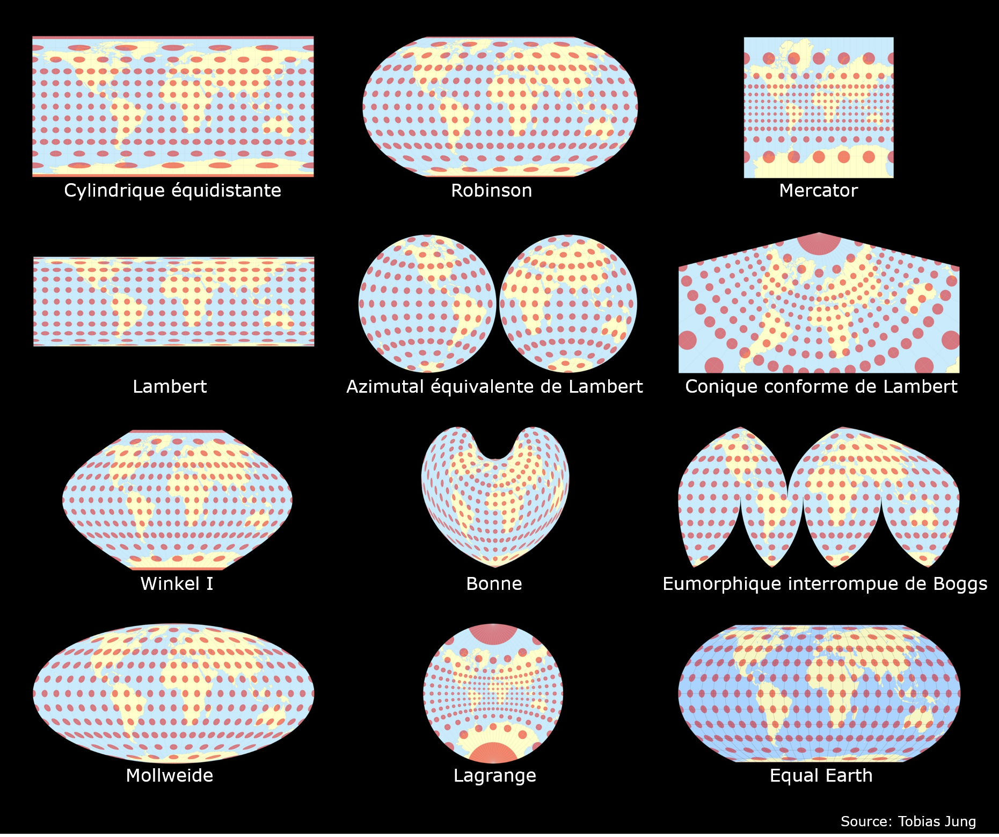
Figure 3.16: Indicatrice de Tissot pour les 12 projections de la figure 3.15. L’ensemble des cartes est tiré du site : https://map-projections.net/
3.1.4 Projections couramment utilisées
Projection de Mercator
La projection de Mercator (Figure Mercator, Figure projections et Figure tissot coin supérieur droit) est une projection cylindrique conforme. Les méridiens y sont parallèles et équidistants. Les parallèles (les lignes de latitude) sont aussi parallèles. Cependant, elles s’écartent les unes des autres au fur et à mesure qu’elles s’éloignent de l’équateur (Esri 2016).
La projection de Mercator fût originalement conçue pour la navigation puisqu’elle préserve les angles. Elle préserve aussi les formes ce qui la rend très populaire pour la cartographie aux échelles régionales. Par ailleurs, la projection de Mercator ne préserve pas les superficies. Elle génère de grandes distorsions aux pôles (Figure 3.16 coin supérieur droit). Par exemple, la superficie du Groenland apparait être aussi grande que celle de l’Afrique sur une projection de Mercator (Figure 3.17, gauche). En vérité, la superficie du Groenland (2 166 086 km\(^{2}\), en mauve sur la Figure Mercator, droit) est inférieure à celle de l’Algérie (2 381 741 km\(^{2}\), en orange sur la Figure 3.17, droit). Ces distorsions rendent la projection de Mercator peu adéquate pour produire des cartes à l’échelle mondiale.
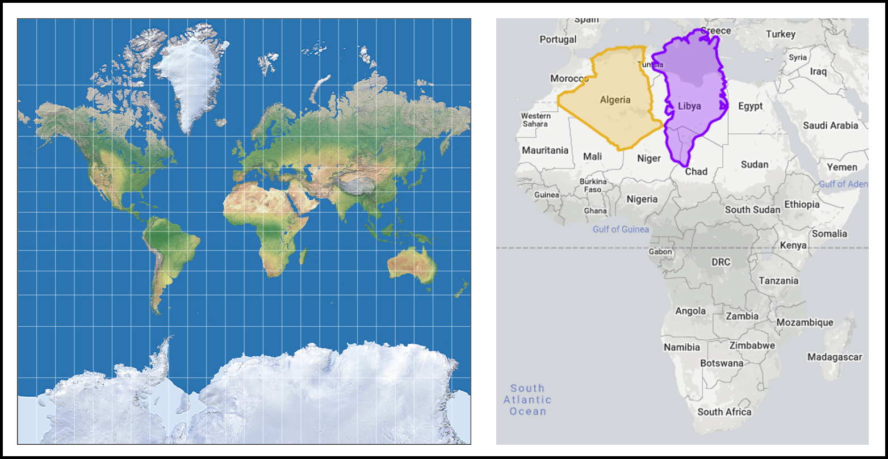
Figure 3.17: Projection de Mercator. À gauche, on observe que les méridiens sont équidistants tandis que les parallèles s’écartent en se dirigeant vers les pôles (source : Tobias Jung, https://map-projections.net/). À droite, on observe que la superficie réelle du Groenland (en mauve) est similaire à celle de l’Algérie (source : https://thetruesize.com/
Les services de cartographie en ligne, comme Google Maps, OpenStreetMap, Bing Maps ou Mapquest, utilise la projection Web de Mercator (avec le datum WGS84). Cette projection est légèrement différente de la projection usuelle de Mercator (elle utilise la transformation sphérique plutôt que ellipsoïdal) produisant des cartes qui ne sont pas tout à fait conformes (PROJ contributors 2020).
Projection Transverse universelle de Mercator
La projection Transverse universelle de Mercator (en anglais Universal Transverse Mercator, UTM) est une projection cylindrique transverse sécante (Figure 3.18. Le globe est séparé en 60 zones au nord et au sud de l’équateur. Chaque zone couvre 6\(^{\circ}\) et est défini en son centre par un méridien central. Les zones sont numérotées de 1 à 60 en suivant la convention selon laquelle la zone 1 couvre la région allant de 180\(^{\circ}\) à 174\(^{\circ}\) ouest (0\(^{\circ}\) correspondant au méridien de Greenwich). Les zones ne couvrent pas les pôles, elles s’arrêtent à la latitude de 84\(^{\circ}\) au nord et de 80\(^{\circ}\) au sud.
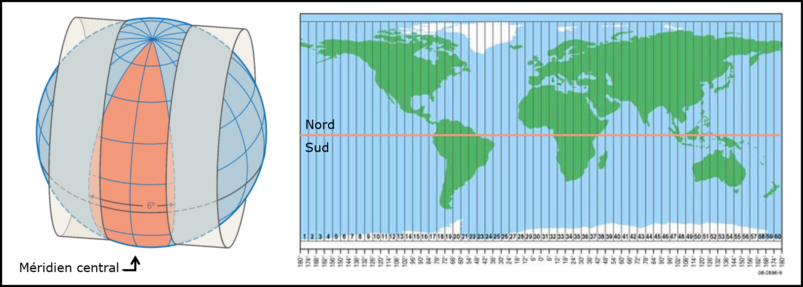
Figure 3.18: Projection transverse universelle de Mercator. Gauche : le globe est découpé en tranches de 6\(^{\circ}\), 3\(^{\circ}\) de part et d’autre d’un méridien central (source : https://www.swisstopo.admin.ch/). Droite : La surface entière de la Terre est représentée par 60 zones (source : https://www.icsm.gov.au/).
La projection transverse de Mercator est réalisée sur chacune des zones de façon distincte. Nous obtenons donc 60 projections différentes. Chaque zone présente des distorsions, mais puisque les zones sont petites (6\(^{\circ}\)), les distorsions sont limitées.
Les coordonnées d’un point dans ce système projeté sont données d’abord par le numéro de la zone dans laquelle il se situe, puis par sa position au sein de la zone, c’est-à-dire par sa longitude et sa latitude mesurées en mètre. On utilise souvent les appellations anglaises pour désigner les longitudes, eastings, et les latitudes, northings.
Par convention, on associe au méridien central la longitude de 500000 m (500 km). Si le point se situe à l’ouest du méridien central, sa longitude est déterminée en soustrayant la valeur 500000 m de la distance à laquelle il se trouve du méridien. À l’opposé, si le point se trouve à l’est du méridien central, sa longitude sera déterminée en ajoutant 500000 m à la distance qui le sépare du méridien. Les latitudes sont déterminées à partir de l’équateur. Dans l’hémisphère nord, l’équateur correspond à l’origine (0 m) et la latitude d’un point est déterminée par la distance qui le sépare de l’équateur. Dans l’hémisphère sud, l’équateur correspond à la valeur 10 000 000 m, et la latitude d’un point est déterminée en soustrayant à 10 000 000 m la distance qui le sépare de l’équateur (Figure 3.19). Ces conventions sont utilisées de manière à avoir toujours des coordonnées positives dans la zone couverte par la projection.
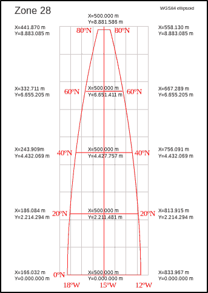
Figure 3.19: Longitudes et latitudes à l’intérieur d’une zone de la projection UTM. Source : http://geokov.com/
Le Canada s’étend de la zone 7 à la zone 22, alors que le Québec couvre les zones 17 à 21 (Figure 3.20). Notez que les zones sont aussi appelées des fuseaux.
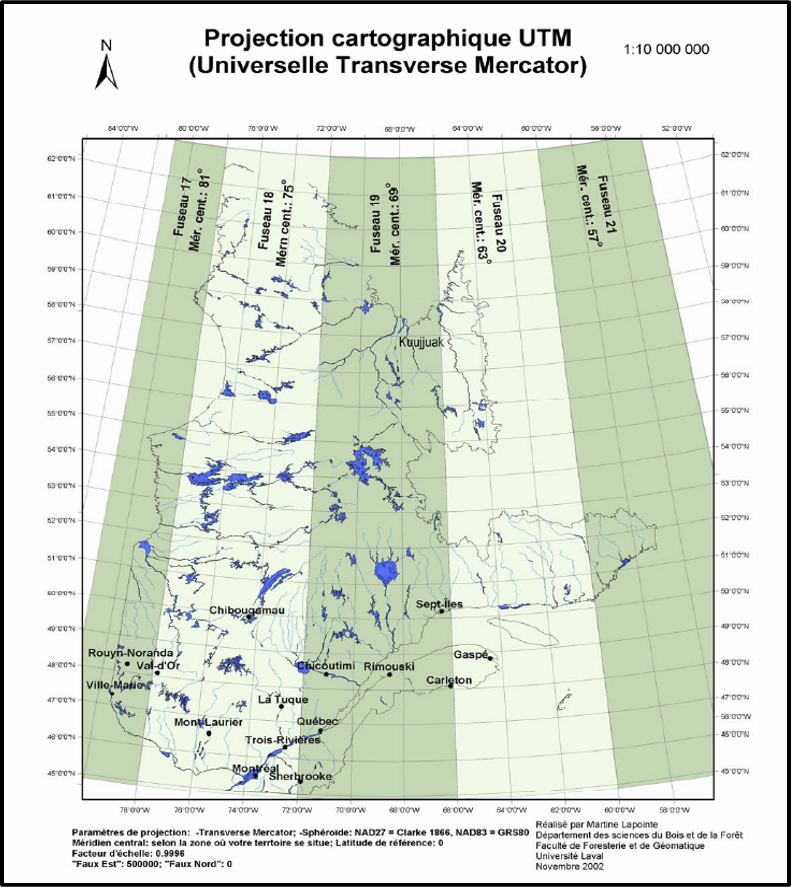
Figure 3.20: Projection Universelle Transverse de Mercator au Québec. Source: Lapointe (2005)
Pour réduire les problèmes liés aux déformations associées au système UTM, le Québec s’est doté de son propre système : la projection modifiée transverse de Mercator (MTM). Le système MTM est identique au système UTM à la différence que chaque zone couvre une longitude de 3\(^{\circ}\). Les zones étant plus petites, les distorsions sont réduites. Les zones sont numérotées de 1 à 8 débutant aux Iles-de-la-Madeleine et se terminant en Abitibi (Figure 3.21). On associe au méridien central des zones MTM la longitude de 304800 m.
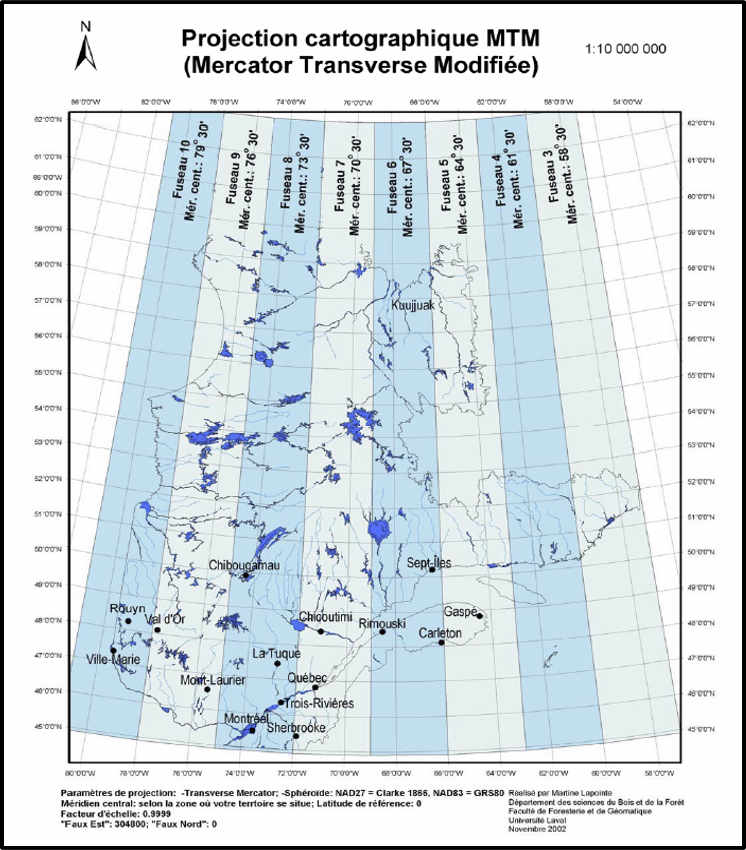
Figure 3.21: Projection Mercator Transverse Modifiée au Québec. Source: Lapointe (2005)
Projection conique conforme de Lambert
La projection conique conforme de Lambert (LCC) conserve, comme son nom l’indique, la forme des régions ainsi que les angles. Cette projection est également sécante : il n’y a de distorsion le long des deux parallèles standards (Figure 3.22). La projection LCC est particulièrement utile pour représenter les régions de latitudes moyennes, comme l’Amérique du Nord, mais elle est également utilisée en Europe.
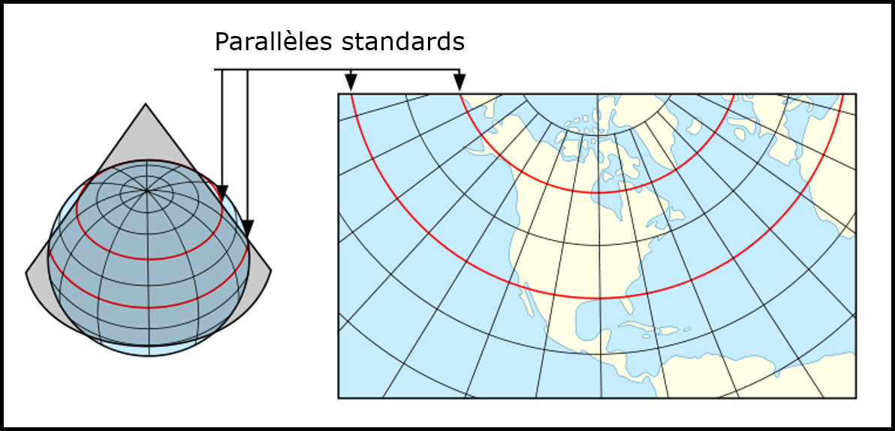
Figure 3.22: Projection conique conforme de Lambert. Source : United States Geological Survey, récupérée sur Wikipedia
La position des parallèles standards varie selon la région du globe représentée. Au Canada, elles sont généralement situées à 49 N et 77 N. La carte ci-dessous du Canada (Figure 3.23) utilise une projection LCC pour présenter les résultats des élections fédérales 2019.
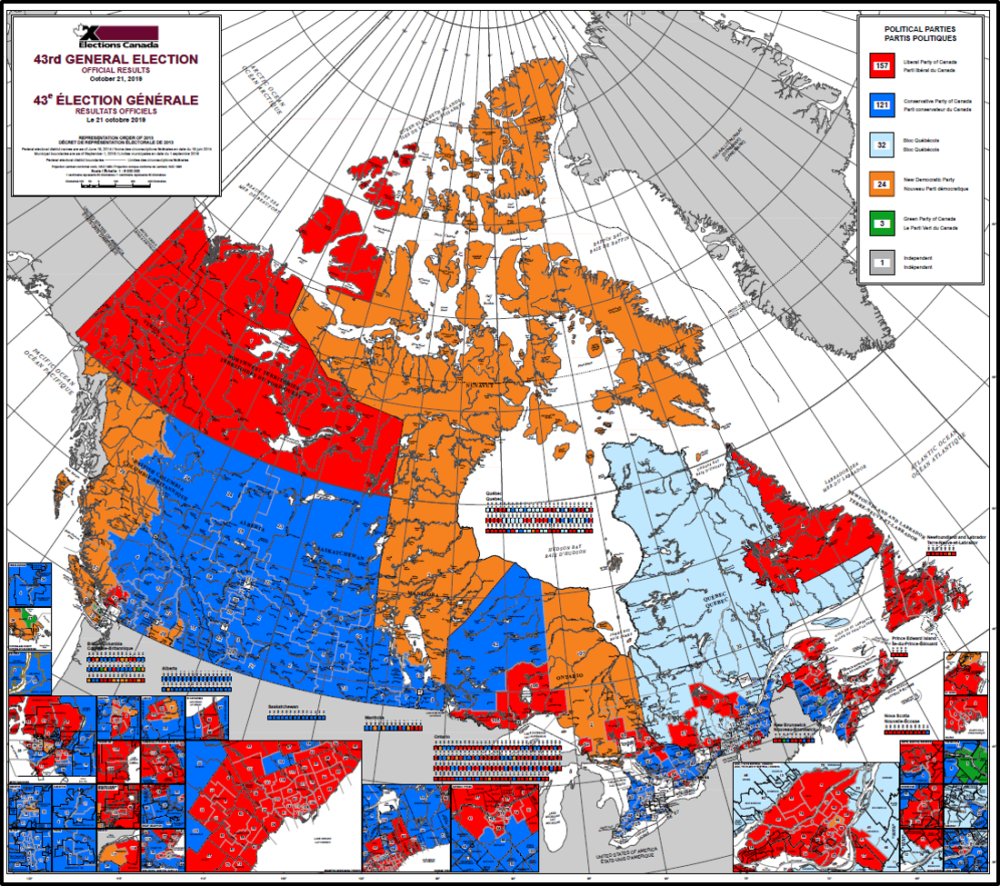
Figure 3.23: Un exemple de projection conique de Lambert. La carte des résultats des élections fédérales canadiennes de 2019. Source : Élections Canada.
3.1.5 Les codes EPSG
Le Comité de topographie et de positionnement (Surveying and Positionning Comittee) de l’Association internationale des producteurs de pétrole et de gaz (OGP), autrefois le European Petroleum Survey Group (EPSG), est une organisation scientifique liée à l’industrie pétrolière qui a mis en place une base de données répertoriant tous les systèmes de référence et les systèmes de coordonnées géographiques et projetés existants. Cette base de données, appelée le registre de codes EPSG, associe un code numérique à chaque système pour en faciliter l’identification et précise ses paramètres géodésiques et de projection. Vous pouvez consulter cette base de données ici.
Vous pouvez aussi utiliser le site https://epsg.io/ et entrez ‘Quebec’ dans la fenêtre de recherche pour connaître les codes EPGS utilisés au Québec.
Par exemple :
- NAD83 : 4269
- NAD83 (SCRS): 4617
- WGS84: 4326
Ou encore:
- Le fuseau 2 de la projection MTM basé sur le NAD83 : 32182
- La projection Web de Mercator : 3857.
3.1.6 Résumé
La figure ci-dessous (Figure 3.24) résume les étapes du processus utilisé pour définir un système de coordonnées géographique et un système de coordonnées projeté.
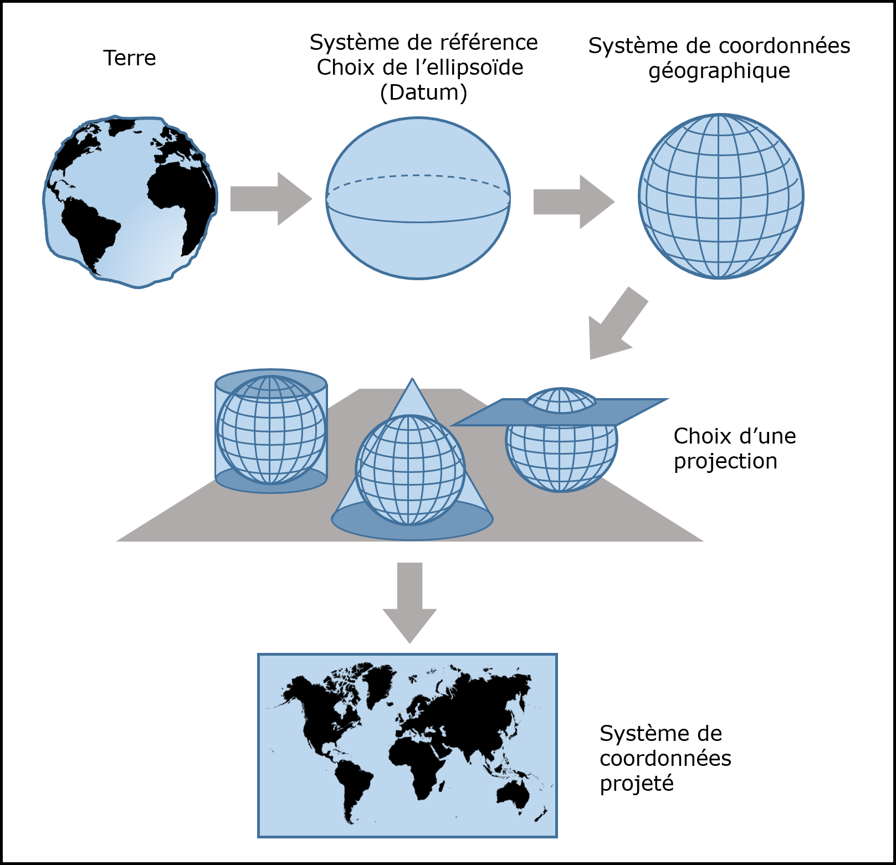
Figure 3.24: Résumé. Les étapes du processus pour définir un système de coordonnées géographique et un système de coordonnées projeté. Source : la figure utilise des pictogrammes créés par T. Grajecta (Noun Project)
Lorsqu’on représente des données spatiales par un système de coordonnées géographique, il faut toujours préciser le datum qui a été adopté. Lorsqu’on représente des données spatiales par un système de coordonnées projeté, il faut toujours préciser le datum et la projection.
Lorsqu’on combine des couches de données différentes, on doit s’assurer qu’elles s’appuient sur le même datum et la même projection. Si ce n’est pas le cas, on peut transformer le système de référence et le système de projection. Nous verrons comment procéder à ces transformations dans le module 7 et e module 8.
References
Craymer, M. R. 2006. “The Evolution of Nad83 in Canada.” Geomatica 60 (2): 151–64. https://doi.org/10.5623/geomat-2006-0019.
Esri. 2016. “ArcGIS Documentation: Map Projections.” 2016. https://desktop.arcgis.com/en/arcmap/10.3/guide-books/map-projections/what-are-map-projections.htm.
Knippers, R. 2009. “Geometric Aspects of Mapping.” International Institute for Geo-Information Science; Earth Observation. https://kartoweb.itc.nl/geometrics/index.html.
Lapointe, M. 2005. “Comprendre et effectuer des projections en cartographie numérique.” Université Laval, Faculté de foresterie et de géomatique.
PROJ contributors. 2020. “PROJ Coordinate Transformation Software Library.” Open Source Geospatial Foundation. https://proj.org/operations/projections/webmerc.html.
Thériault, Y. 2010. “Guide sur les référentiels géodésiques et altimétriques au Québec.” Ministère des Ressources naturelles et de la Faune, Direction de la référence géodésique.
Source: Le Québec géographique↩︎
“Une surface où le potentiel est constant et qui est en tous points perpendiculaire à la direction dans laquelle s’exerce la pesanteur. Une surface équipotentielle est de niveau, c.-à-d. que l’eau y reste au repos”. Définition de Ressources Naturelles Canada↩︎